Research
Research Interests
Research Themes
Each theme links to its papers on the Publications page. Figures are taken from my published papers.
Wireless waveforms for 5G/6G
High peak-to-average power ratio (PAPR) limits power-amplifier efficiency in OFDM-based systems. We design Ramanujan-based multicarrier and multiple-access waveforms (RPDM, ORPDM, RPDMA, µ-RPDM, and Modulo-NPDM) with analytical results on PAPR, spectral efficiency, and complexity. We carried out the first software-defined radio implementation and over-the-air validation of RPDM on an NI USRP X310 testbed.

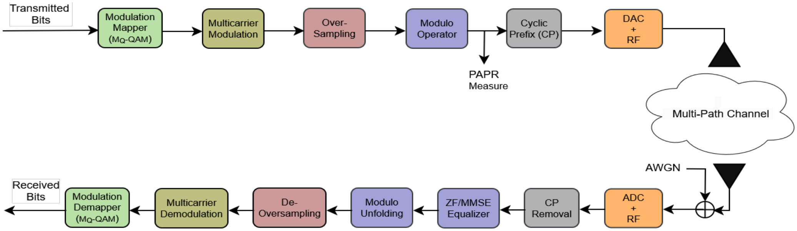

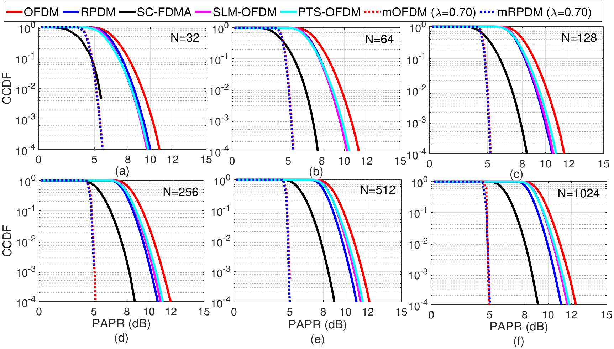

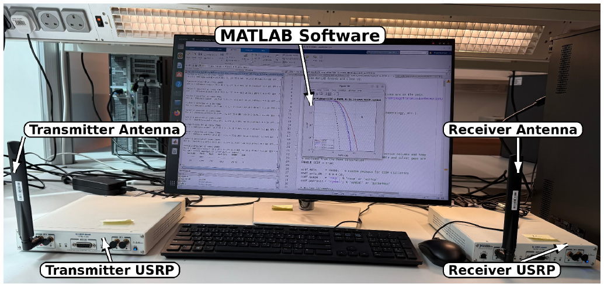
Modulo sampling and high-dynamic-range ADCs
Modulo ADCs fold large signals into a small range, so a low-cost converter can capture high-dynamic-range inputs. We develop recovery algorithms, performance guarantees under quantization, and low-rate hardware prototypes, which led to a US patent application.

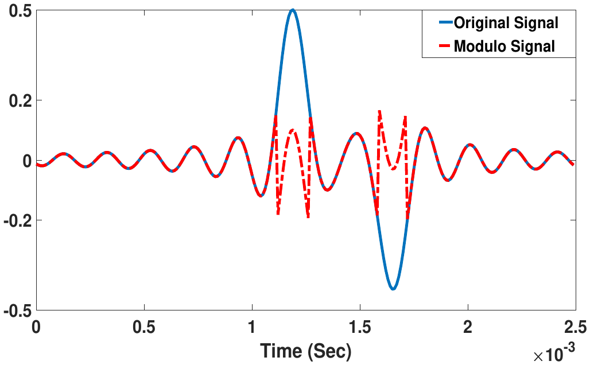

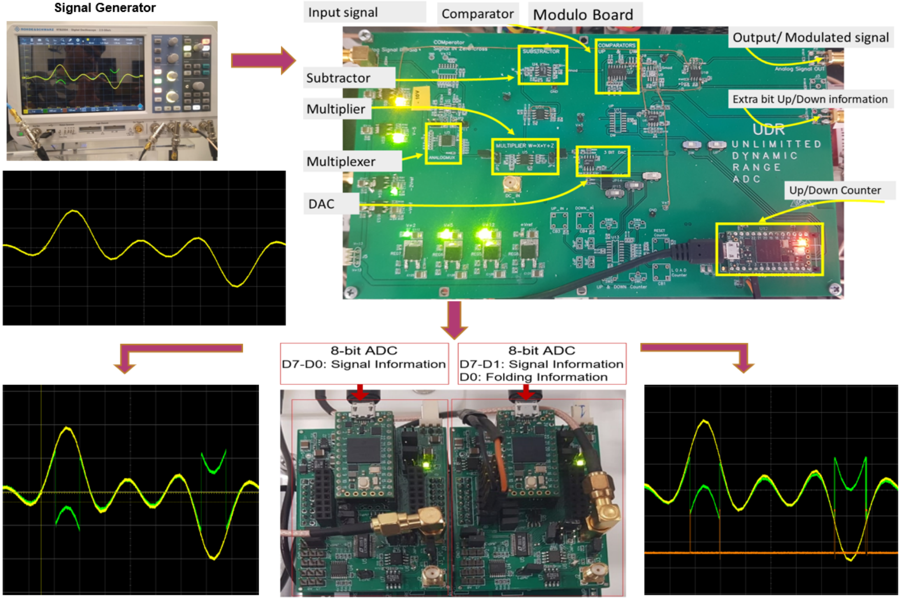
Model-based deep learning and unfolded networks
Algorithm unrolling turns iterative solvers such as ISTA and ADMM into trainable neural networks. We study when these networks train reliably, with optimization and generalization guarantees, and design faster sparse-recovery algorithms.

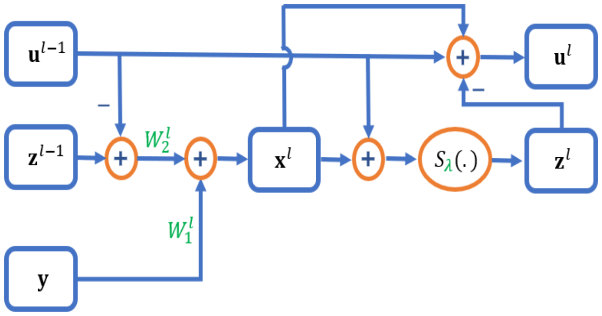

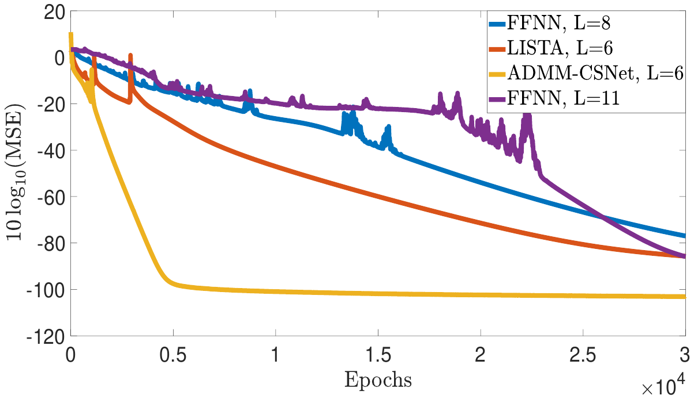
Ramanujan signal processing and period estimation
We developed signal representations based on Ramanujan sums and complex conjugate pair sums to extract periods and frequencies from short signals. This includes the orthogonal complex conjugate periodic transform (OCCPT), which needs about half the computation of the FFT for complex-valued signals.

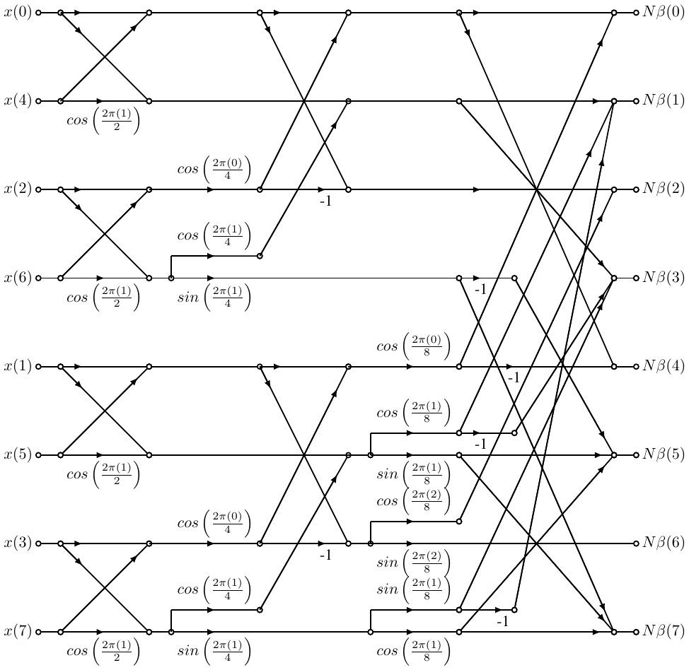

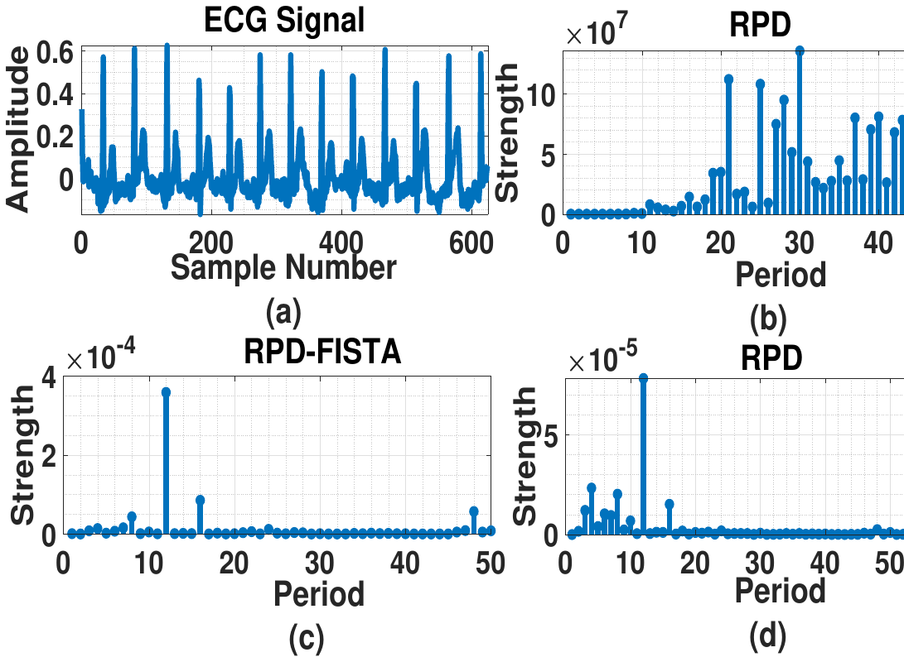
Machine learning for environmental data
With collaborators at Khalifa University, we apply machine learning to air-quality forecasting (PM2.5, PM10, NO2, and O3) in the UAE.

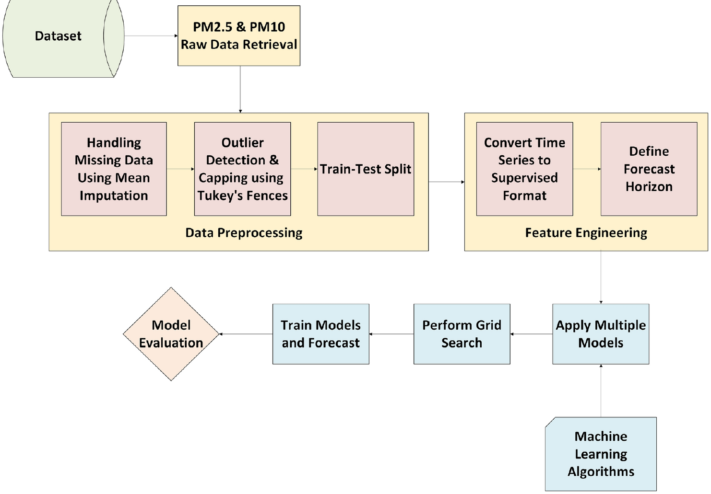

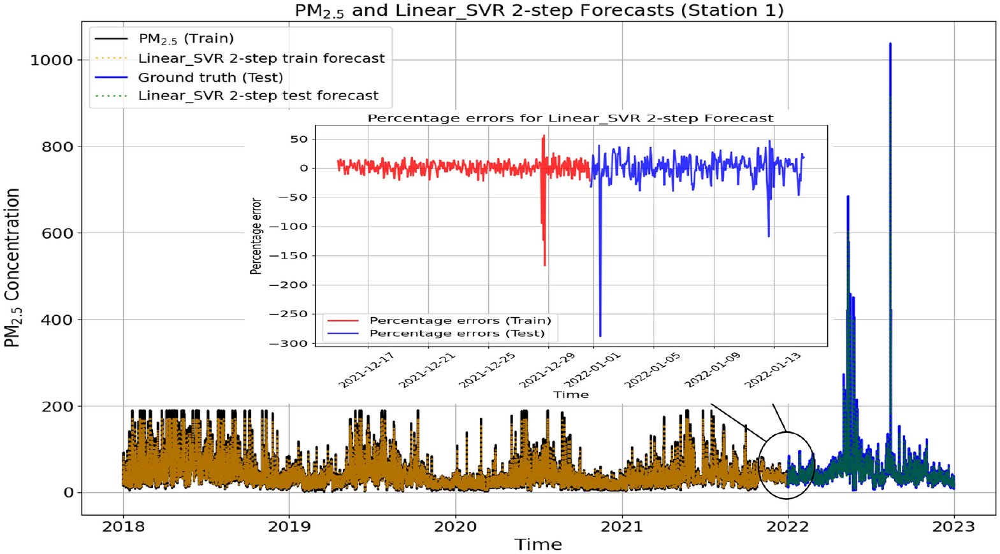
Biomedical signal processing
Earlier work on ECG and EEG analysis (QRS delineation, power-line interference removal, epileptic EEG classification) and DNA tandem-repeat detection.

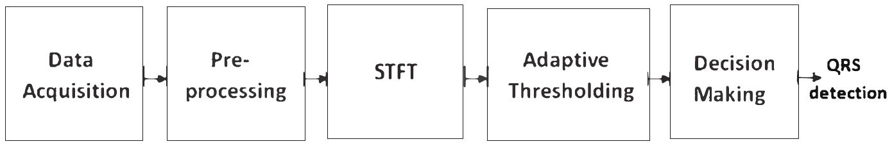

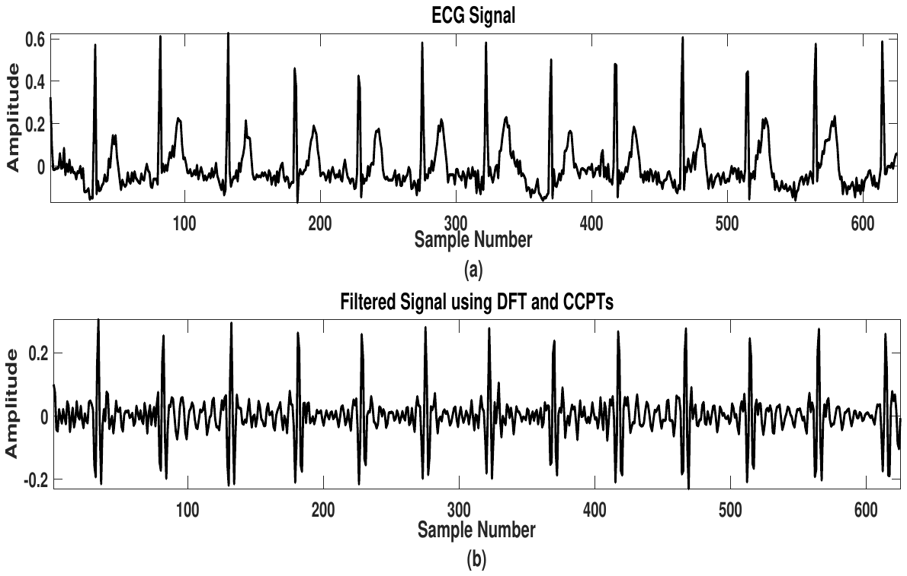

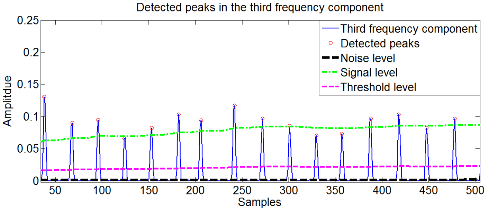
Collaborators / Co-authors
People we have worked with (full co-author lists are on the Publications page):
- Dr. Nazar T. Ali — Khalifa University, UAE
- Prof. Yonina C. Eldar — Weizmann Institute of Science, Israel
- Prof. Vijay Kumar Chakka — Shiv Nadar University, India
- Dr. A. Satyanarayana Reddy — Shiv Nadar University, India
- Dr. Satish Mulleti — IIT Bombay, India
- Dr. Goli Srikanth — University of Luxembourg, Luxembourg
- Dr. Ahmed Altunaiji — Khalifa University, UAE
- Dr. Zeyar Aung — Khalifa University, UAE
- Prof. Raed A. Abd-Alhameed — University of Bradford, UK
- Dr. G. V. S. S. K. R. Naganjaneyulu — RGUKT (IIIT) Nuzvid, India
- Prof. A. V. Narasimhadhan — National Institute of Technology Karnataka, Surathkal, India
- Dr. Venugopalachary Kotha — Shiv Nadar University, India
- Dr. Pradyumna Pradhan — Weizmann Institute of Science, Israel
- Dr. Mohamed Ibrahim Alhajri — American University of Sharjah, UAE
- Dr. Priyanka Mathur — Shiv Nadar University, India
- Prof. Dragan Olćan — University of Belgrade, School of Electrical Engineering, Serbia
- Prof. Miguel R. D. Rodrigues — University College London, UK
- Dr. Neil Irwin Bernardo — University of the Philippines Diliman, Philippines
Research Funding
- Key Researcher, Khalifa University–University of Belgrade Joint Research Collaboration (2024–present)